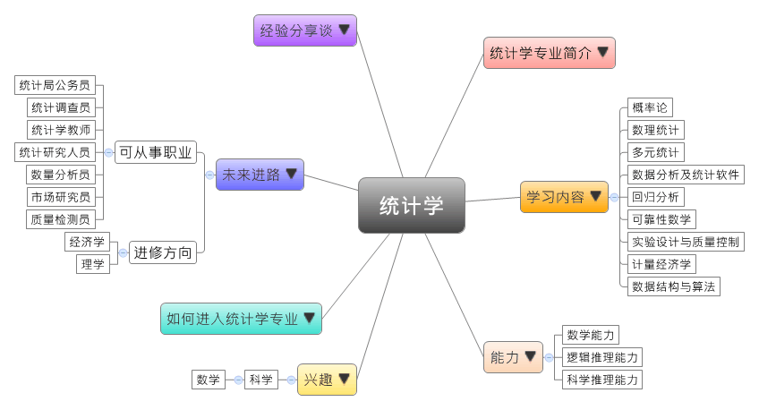

- 专业大观园
-

- 专业介绍
-
什么是统计学专业？
统计学就是寻求各种现象变动的规律性，以预测未来。统计学已越来越深入地渗透到我们生活的各个方面，成为各行各业分析和解决问题的重要工具和手段。在职场上，通过商业统计专长可以协助了解市场，对于各企事业单位的发展走向有重要的指导地位；在生活中，具备统计学专长能让我们学会看懂各项投票、市占率、问卷调查结果等资料背后的意义。
统计学专业除了训练学生全方位的统计能力，也通过加强文化和理论基础课等教学，扩大专业知识面，让学生面对工作时具有更广泛的适应性。
统计学专业学生讨论统计学题目 在计算机上操作统计学软件
- 学习内容
-
统计学专业学生主要学习统计预测和统计决策相关统计学之理论知识、统计软件的应用。统计学实际的应用特别受到重视，所以学生需要接受各种海量资料的处理和分析等专业训练。
本专业学习方向通常会分为三类：数理统计、经济统计和生物统计；也有学校开设证券投资的统计分析或经济预测与决策等实务应用性较强的课程，为学生未来的就业做好准备。统计学专业主干课程有：数学分析、几何代数、数学实验、常微分方程、复变函数、实变与泛函、概率论、数理统计、抽样调查、随机过程、多元统计、计算机应用基础、程序设计语言、数据分析及统计软件、回归分析、可靠性数学、实验设计与质量控制、计量经济学、金融数学、数值分析、数据结构与算法、数据库管理系统……等。此外，学生须加选数据的搜集方法、数据的处理归纳方法、数据的分析方法等实务应用课程。
本专业可以习得的知识与获得之能力、技能列点：第一，全面掌握统计学的理论知识，以及进行统计相关研究的能力；第二，具备进行资料调查、整理与分析的能力；第三，能为实际问题的解决和决策提供量化的依据。
- 能力
-
统计学专业学生，需具备以下能力：
相关性向能力 说明 数学能力  具有数学分析能力
具有数学分析能力
掌握数学的基础知识
学会较强的演算能力逻辑推理能力 能够提出假设并进行验证
具有找出事物的原理原则，进行批判与独立思考的能力科学推理能力 学会建立简单力学模型的方法
受到科学研究和工程技术应用的初步训练
- 兴趣
-
若你对下列活动或事物有高度兴趣，可考虑进入统计学专业学习：
科学 数学 对数学的推导证明感兴趣
对事物充满好奇并追根究底
擅长运用科学方法找出问题的解答
- 如何进入此专业
-
下面列举开设统计学专业的211工程重点大学院校：
- 未来进路
-
可从事职业
统计学专业能应用在许多工作领域，例如在会计、数据管理方面都可以从事负责有关数据的处理和分析的工作。学生毕业后就业选择有以下几个面向，通常适合到企业、事业单位和经济、管理部门从事统计调查、统计信息管理、数量分析等开发、应用和管理工作；同时，如果具备优秀的外语能力，统计分析能力又强，还有一定的社会实践经验，则能够进入跨国公司与大牌咨询公司，担任精算师和风险管理的高阶工作；另外，在科研、教育部门从事研究和教学工作也是适合的选择。在工作职场上皆能发挥演算分析、推导证明等专长：
行业 职业 金融部门 统计调查员、数量分析员、市场研究员、质量检测员、精算师、风险管理师 政府部门 统计局公务员 教育 统计老师 科学研究 教授、研究员 进修方向以下列举统计学专业毕业生可以继续修读之学科门类、一级学科与硕士点：
学科门类 一级学科 硕士点 经济学 统计学统计学、经济统计学、应用概率统计 应用统计（专业硕士）应用统计 应用经济学国民经济学、金融数学与金融工程、精算学、数量经济学 理学 数学概率论与数理统计、数理经济 统计学统计学、数理统计学、经济统计学、金融统计与风险管理、应用统计学、社会经济统计学
- 经验分享谈
-
用热情拥抱统计学的研究者——林希虹
1984年，林希虹从北京八中考入清华大学应用数学系，当时的她并不清楚自己以后想做什么。随着学习的加深，偶然的机会改变了她的人生轨迹。她做的大学毕业设计是系统预测，用到一些时间序列的东西，觉得挺好玩。这次设计使她对能将理论和实践结合起来的统计学产生了浓厚的兴趣，她开始“觉得学术研究适合自己，比较自由，可以尝试用不同的方法来发现问题、解决问题，有创新性。如果做同样一件事，会觉得无聊。”
从学生时代开始，林希虹就没有离开校园，从学生到老师，从懵懂的初学者到专业的领军人物，她将自己的青春、热情、汗水和努力都奉献给了自己热爱的统计学学术领域。对于自己的选择，林希虹显然是很享受的。她认为每个人都有自己的优缺点，“最重要的是，做你自己喜欢的事情，发挥所长。”而如何找到自己的所爱和所长，则需要有能发现问题的、开放的头脑和心灵。
对于如何做好自己所长的事情，她有着自己的见解“成绩最好的学生不一定是优秀的研究者，一个优秀的研究者要看重他是否有内在的动力和驱动，是否有激情，是否很投入和专注，这是发自内心的一种素质和渴望。”内心要有一团火、满腔热忱地追求你喜爱的事情，为它痴狂、为它燃烧，是成事的必要条件。【资料来源：水木清华 2010年第11期 生命的三彩访清华校友、哈佛大学生物统计系终身正教授林希虹】